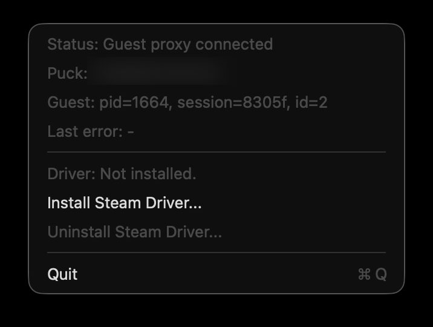
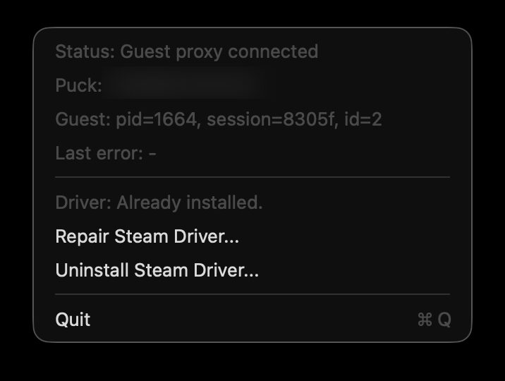
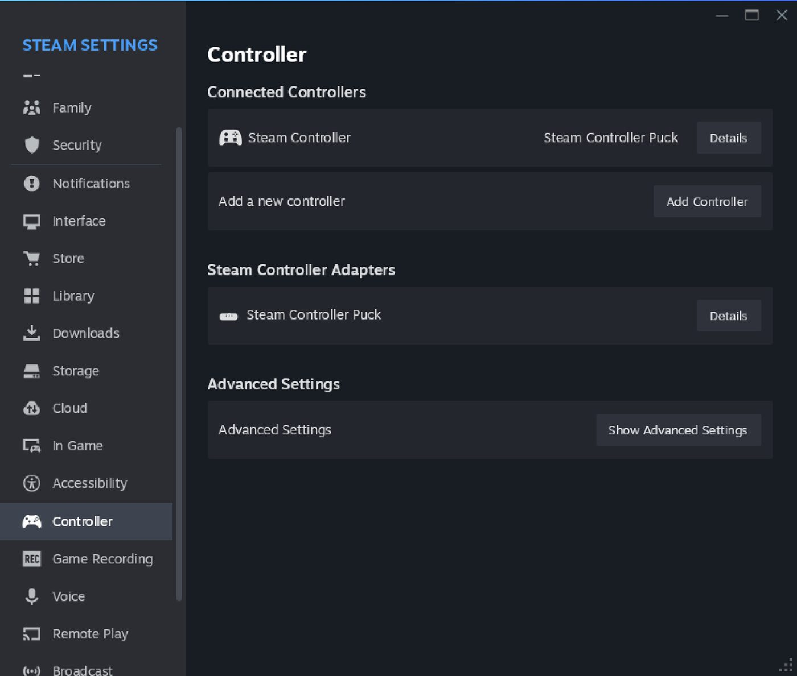
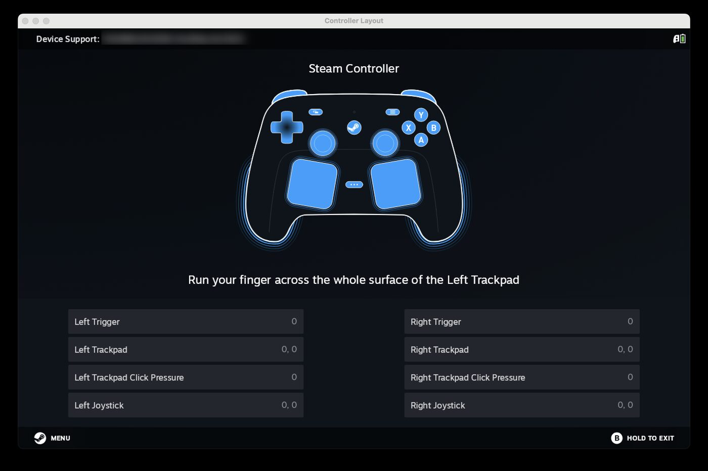

Host app on macOS
CrossPuck.app runs in the menu bar, reads the physical controller, and sends input to the guest process.
Use the Steam Controller(2026) with CrossOver
Steam,
with input and haptics bridged both
ways.
Tested with macOS Tahoe and CrossOver 26.1.
Steam Controller must be paired with the Puck
connected to macOS over USB; Bluetooth
connection is not supported.
CrossPuck.app runs in the menu bar, reads the physical controller, and sends input to the guest process.
The bundled hid.dll exposes controller profiles to Steam and forwards non-virtual HID calls to the real system HID DLL.
Steam haptics and rumble requests are bridged back through the host app so the physical controller responds normally.
Open the .dmg and drag CrossPuck.app into Applications.
Start CrossPuck once, then enable it in System Settings, Privacy & Security, Input Monitoring. Restart CrossPuck after changing the permission.
Quit Steam in the bottle, open the CrossPuck menu, and choose Install Steam Driver....
Keep CrossPuck running, then start Steam from the CrossOver bottle. Steam should see the bridged controller.

When the driver is missing, choose Install Steam Driver... from the CrossPuck menu.

After installation, the menu changes to repair and uninstall actions for the Steam driver.

Steam should list the Steam Controller and the Steam Controller Puck in Controller settings.

Open the controller layout test in Steam and confirm that buttons, triggers, pads, and joystick values respond.
macOS requires this permission before CrossPuck can open and read the Steam Controller or Steam Puck HID device from the host. Without it, the app can wait for the CrossOver guest connection, but it cannot read controller reports. To be a trustworthy macOS app, release builds are signed and go through Apple Notarization before distribution.
CrossPuck installs hid.dll next to Steam.exe in the target bottle.
No. It writes crosspuck-wine-override.reg into the bottle and imports it through CrossOver regedit.
Both CrossOver.app and CrossOver Preview.app are supported, with fallback handling when only one is installed.
No. This driver is designed to live next to Steam and should not be installed into drive_c/windows/system32.